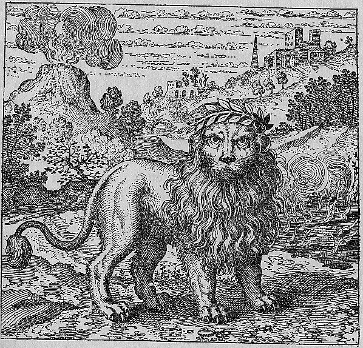

Three distinct substances or elements are displayed or arranged together: a plume of white smoke rising from a vessel, a green lion (a vitreous or green-tinged substance), and dark, foul-smelling water. The three may be shown in separate vessels or combined in a single scene. A figure surveys or prepares the three ingredients. The composition emphasizes the triad of materials.
Three things are sufficient for mastery: white smoke, that is water, the green Lion, that is the Ore of Hermes, and stinking water.
Maier argues that mastery requires only three things: white smoke (water in its volatile form), the green lion (the raw ore of Hermes, vitriol or an impure metallic substance), and stinking water (the foul aqua foetida that dissolves metals). He develops the principle of simplicity in the art: despite the bewildering variety of alchemical texts, the practical requirements are minimal. The discourse uses the metaphor of building a house — foundation, walls, roof — to argue that the alchemist needs only three components properly combined and treated. Maier cites this triadic simplicity against the accusations of fraud and impossibility leveled at the art.
Emblem XXXVII bears the motto: "Three things are sufficient for mastery: white smoke, that is water, the green Lion, that is the Ore of Hermes, and stinking water."
Maier argues that mastery requires only three things: white smoke (water in its volatile form), the green lion (the raw ore of Hermes, vitriol or an impure metallic substance), and stinking water (the foul aqua foetida that dissolves metals). He develops the principle of simplicity in the art: despite the bewildering variety of alchemical texts, the practical requirements are minimal. The discourse uses the metaphor of building a house — foundation, walls, roof — to argue that the alchemist needs only three components properly combined and treated.
De Jong's source-critical analysis identifies the textual traditions Maier draws upon for this emblem.
The discourse draws on alchemical sources: Lullius tradition (via Harmonica Chemica), Rosarium Philosophorum. The discourse draws on biblical sources: Solomonic / Biblical Wisdom Tradition (Proverbs).
Hereward Tilton: Tilton pairs discourse 37 with discourse 10 as references to the aqua foetida — the sulphurous, grave-smelling spirit used in alchemical solution. This is the 'perpetual spring' or quintessence that Pegasus struck from Parnassus, central to Maier's Rosicrucian allegory.
H.M.E. de Jong: De Jong traces the Hermaphrodite's standing posture to Morienus's De Transmutatione Metallorum, identifying this as the completed union of Mercury and Venus. She demonstrates how Maier uses the Socratic cosmopolitanism allegory to argue that the perfected substance inhabits multiple domains simultaneously.
Tilton pairs discourse 37 with discourse 10 as references to the aqua foetida — the sulphurous, grave-smelling spirit used in alchemical solution. This is the 'perpetual spring' or quintessence that Pegasus struck from Parnassus, central to Maier's Rosicrucian allegory.
Citation: Ch. IV, p. 171
De Jong traces the Hermaphrodite's standing posture to Morienus's De Transmutatione Metallorum, identifying this as the completed union of Mercury and Venus. She demonstrates how Maier uses the Socratic cosmopolitanism allegory to argue that the perfected substance inhabits multiple domains simultaneously.